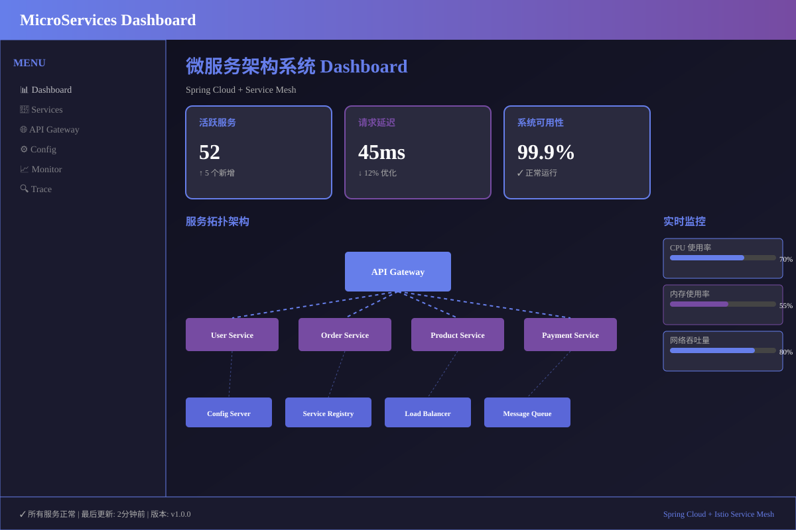

微服务架构系统
Spring Cloud + Service Mesh
📋 项目介绍
企业级微服务架构系统，基于Spring Cloud和Istio Service Mesh。包含服务配置、服务发现、负载均衡、分布式追踪等完整解决方案，支持50+个微服务协调运作。
✨ 核心功能
- ✓ 服务注册与发现（Eureka）
- ✓ 集中配置管理（Config Server）
- ✓ 负载均衡（Ribbon/Feign）
- ✓ 服务网格管理（Istio）
- ✓ 分布式追踪（Jaeger）
- ✓ 日志聚合分析（ELK Stack）
🔧 技术栈
Java
Spring Cloud
Istio
Docker
Kubernetes
Prometheus
Grafana
📊 项目成果
支持50+个微服务运行，系统延迟<100ms，可用性99.95%，支持灰度发布和蓝绿部署。< /p>
🔗 GitHub仓库
GitHub链接